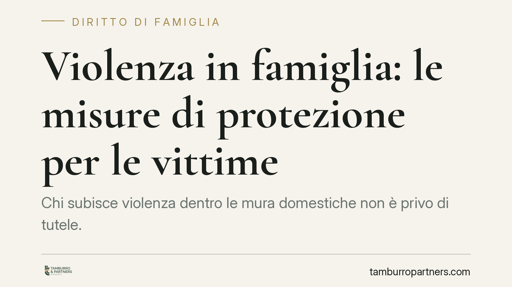

Violenza in famiglia: le misure di protezione per le vittime
Chi subisce violenza dentro le mura domestiche non è privo di tutele. L'ordinamento prevede misure specifiche - dall'allontanamento dell'aggressore al braccialetto elettronico - pensate per interrompere la convivenza pericolosa e proteggere la vittima e i figli. Vediamo come funzionano e cosa fare quando la situazione degenera.

Il quadro: cosa prevede la legge
La violenza domestica non riguarda solo l'aggressione fisica. Comprende maltrattamenti, minacce, condotte persecutorie e coercizione psicologica all'interno del nucleo familiare o affettivo. Contro queste condotte l'ordinamento mette a disposizione strumenti che agiscono su due piani: quello penale, per punire l'autore, e quello cautelare, per proteggere subito chi è in pericolo.
Le misure di protezione sono in gran parte cautelari, cioè disposte dal giudice prima e a prescindere dalla condanna definitiva. Il presupposto è la sussistenza di indizi di reato e di un concreto pericolo per la vittima. Non serve attendere la fine del processo: la tutela deve essere immediata.
Inquadramento normativo
La misura centrale è l'allontanamento dalla casa familiare, prevista dall'art. 282-bis c.p.p. Il giudice ordina all'indagato di lasciare l'abitazione e gli vieta di rientrarvi senza autorizzazione. Alla stessa misura si può accompagnare il divieto di avvicinamento ai luoghi frequentati dalla vittima - casa, lavoro, scuola dei figli - con l'indicazione di una distanza minima da rispettare.
Per rendere effettivo il controllo, l'art. 275-bis c.p.p. consente l'applicazione del braccialetto elettronico: un dispositivo che segnala in tempo reale la posizione dell'obbligato e allerta le forze dell'ordine se le distanze vengono violate.
Infine, l'art. 387-bis c.p. punisce come reato autonomo la violazione degli ordini di allontanamento e del divieto di avvicinamento. Chi trasgredisce la misura non commette una semplice irregolarità: risponde penalmente, con possibilità di aggravamento cautelare fino alla custodia in carcere.
È importante ricordare che, nell'ambito dell'allontanamento, il giudice può anche imporre all'aggressore il versamento di un assegno periodico a favore delle persone che convivevano e che restano prive di mezzi. È una tutela economica pensata per evitare che la protezione fisica si traduca in indigenza per la vittima e i figli.
Cosa cambia in concreto
Per chi subisce violenza, queste misure significano una cosa precisa: la convivenza con l'aggressore può essere interrotta subito, senza dover essere la vittima a lasciare la propria casa. È l'autore delle condotte a doversene andare.
Il braccialetto elettronico aggiunge un livello di sicurezza reale, perché trasforma il divieto da carta a controllo attivo. E la previsione dell'assegno evita che la scelta di denunciare comporti un tracollo economico, soprattutto quando ci sono figli minori.
Sul piano dei tempi, le misure cautelari possono essere richieste e ottenute in poche settimane, talvolta in pochi giorni nei casi più gravi. Esistono anche strumenti d'urgenza attivabili dalle forze dell'ordine e dal pubblico ministero.
Un punto merita attenzione: la protezione penale e quella civile viaggiano su binari distinti ma coordinabili. Accanto al procedimento penale è possibile agire in sede civile per la separazione, l'affidamento dei figli e gli aspetti patrimoniali. Coordinare i due percorsi è spesso la strada più efficace.
Cosa fare in concreto
- Documenta tutto. Conserva messaggi, referti medici, fotografie, testimonianze. Ogni elemento rafforza la richiesta di misure cautelari.
- Non aspettare l'episodio grave. Le misure scattano sugli indizi di pericolo: segnala tempestivamente anche minacce e condotte persecutorie.
- Rivolgiti alle forze dell'ordine o al pronto soccorso in caso di aggressione: il referto e la denuncia sono il primo atto formale da cui parte la tutela.
- Chiedi assistenza legale specializzata per valutare, insieme, la misura più adatta e il coordinamento tra sede penale e civile.
- Metti in sicurezza i figli. Segnala al giudice la loro esposizione: incide sulle misure e sull'affidamento.
La scelta della misura e la sua concreta applicazione dipendono sempre dalle circostanze del singolo caso. Consigliamo di far esaminare la propria situazione da un professionista prima di intraprendere qualsiasi iniziativa.
---
*Contributo informativo a cura di Tamburro & Partners - Avv. Giuseppe Tamburro. Non costituisce parere legale.*
Ogni famiglia ha il suo equilibrio.
Separazione, divorzio, affidamento, assegno: se vuoi un confronto riservato su una specifica situazione, scrivi allo studio. Ti rispondiamo entro un giorno lavorativo.